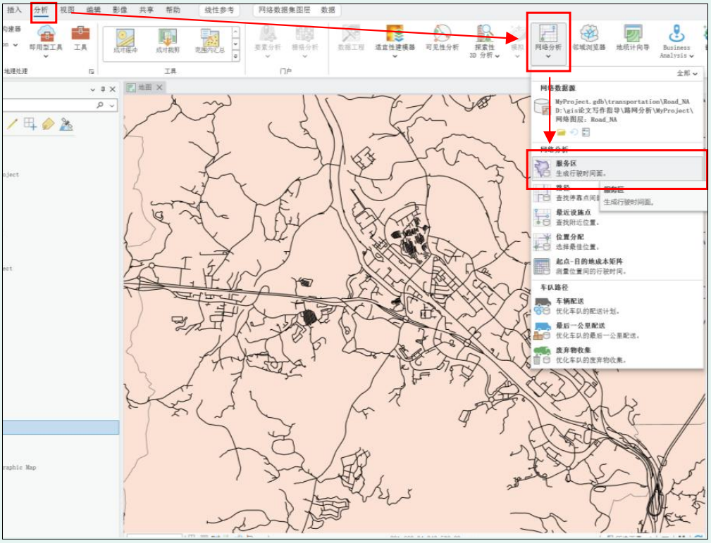
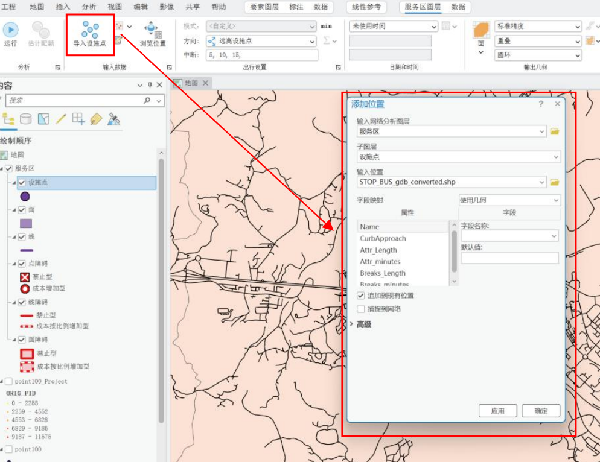
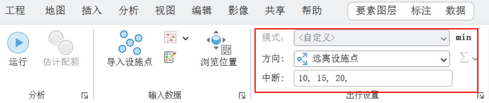
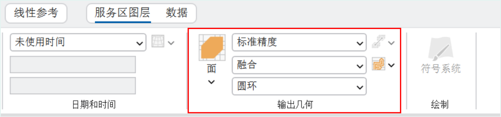
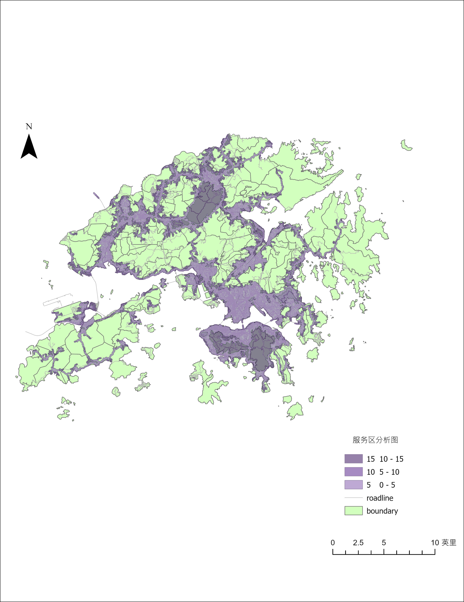

研究图层说明
该图层直接读取 ArcGIS Network Analyst 导出的服务区面，按 FromBreak 和 ToBreak 对应 0–5、5–10、10–15 分钟时间圈层。交互地图支持查看各圈层时间范围。
服务区按 0–5、5–10、10–15 分钟时间阻抗分级。
该图层直接读取 ArcGIS Network Analyst 导出的服务区面，按 FromBreak 和 ToBreak 对应 0–5、5–10、10–15 分钟时间圈层。交互地图支持查看各圈层时间范围。
在网络分析菜单中创建服务区，使用“导入设施点”加载待分析位置。


设置出行方向、时间中断值及服务区输出方式。下图时间参数为 10、15、20 分钟的操作示例；本网站已有导出数据为 0–5、5–10、10–15 分钟圈层，复现时应对应设置 5、10、15 分钟。截图展示融合、圆环等输出选项。


在 ArcGIS Pro Network Analyst 中设置设施点、道路网络、慢行出行模式与 5、10、15 分钟时间阻抗，生成分级服务区面。
将不同时间圈层赋予由近及远的递进色彩，完成边界、道路与图例排版后导出服务区结果。

服务区 = 在设定网络、出行方式与时间阻抗下，从设施出发可达的道路服务范围